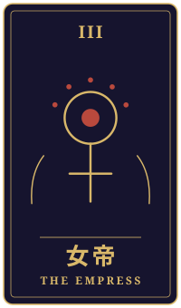
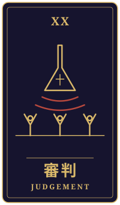
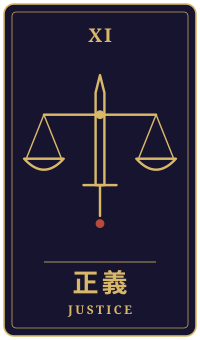

異常なし
物語の手前に、ひとつの相談がありました。三枚のタロットをめぐるやりとりを、聞こえたままに書き留めています。
持ち込まれた相談
夜の工場で、暗いまま育つ野菜に四、五時間おきに水をかける仕事を二十年近くしてきました。芽は放っておくと自分の熱で駄目になるので、夜通し気が抜けません。来春から機械が水をやるようになり、昼の包装の仕事に移るか、辞めるかを年内に決めなければなりません。野菜が高くて、うちの品はよく売れているそうです。それなのに私の手はもう要らない。ほっとした気持ちもあるのが、自分でも情けないです。明るい昼の職場で、若い人に混じってやっていけるのか。辞めて何をするのかも思いつきません。娘には心配をかけたくない。私はこの先、どちらへ向かえばいいのでしょうか。
タロットの読み解き

過去
女帝・正位置
過去に出た女帝は、豊かさや愛情、実りを表すカードです。夜通し水をかけ続けてきた二十年は、命を育てることに心を注いできた時間だったのでしょう。野菜が高く売れているのも、その手間が確かに実を結んできた証なのかもしれませんね。

現在
審判・正位置
今の審判は、復活や再起、そして覚悟を示すカードです。来春という区切りが見えてきて、ほっとする気持ちと情けないという思いが同時にあるのは、長く続けてきた人だからこそ自然なことだと思います。その揺れを責めずに、まずは静かに眺めてみてはどうでしょう。

未来
正義・逆位置
未来に出た正義は逆位置です。逆位置の正義は、不公平や偏り、優柔不断を映すことがあります。ここでは、自分を「もう要らない手」と低く見積もってしまう偏りや、昼の仕事と辞める道を決めきれずにいる迷いに、少し目を向けてほしいという合図と受け取れるかもしれません。悪い知らせではなく、天秤の傾きを整えるための気づきだと考えてみてください。
最後に
どちらへ進むかは、このカードだけで決められるものではありません。ただ、若い人に混じる不安も、辞めた後の戸惑いも、長く誠実に働いてきたからこそ生まれるものですね。年内という時間の中で、娘さんに正直な気持ちを話してみたり、ハローワークや働き方の相談窓口で話を聞いてもらったりするのも、ひとつの支えになるかもしれません。
帰り際の問い自分の判断に、どんな偏りが入っているか。
読み解きは、タロット占い「月夜のアルカナ」が、この相談と引かれた三枚から返したものです。小説は同じ三枚を、別の角度から描いています。相談者は物語のための架空の人物です。相談文・読み解き・短編本文は、いずれも生成AIを使って制作しています。
物語に戻る